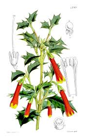

Columelliaceae
Columellia Family
Columelliaceae is a small family comprising two distinct genera...
Overview
Columelliaceae belongs to the small order Bruniales, positioned within the Campanulid clade of Asterids. The family itself is very small, containing only two genera, Columellia (~4-7 species) and Desfontainia (1 highly variable species), totaling fewer than 10 species. Its distribution is entirely restricted to the montane regions of the Andes in South America, from Colombia southwards to Chile and Argentina, where they occur in forests and high-elevation shrublands (páramo).
Members are evergreen shrubs or small trees. They typically possess opposite, simple leaves that are often leathery and frequently have sharply toothed or spiny margins, resembling holly leaves (Ilex). The flowers, borne singly or in cymes/panicles, have fused petals (sympetalous), usually 5 lobes, and are often yellow, orange, or red, particularly in the showy Desfontainia.
A remarkable aspect of the family is the significant morphological divergence between its two constituent genera, despite strong molecular evidence for their close relationship (sister genera). Columellia is characterized by having an inferior ovary, only 2 stamens with unusually large, twisted anthers, and fruit that is a fleshy capsule. In contrast, Desfontainia possesses a superior ovary, 5 'normal' stamens, and fruit that is a berry. This inclusion of Desfontainia (previously often placed in its own family or near Loganiaceae/Solanales) within Columelliaceae alongside Columellia is a relatively recent change mandated by phylogenetic data. The family has little economic importance, though Desfontainia spinosa is sometimes cultivated ornamentally in mild climates.
Quick Facts
- Scientific Name: Columelliaceae D.Don
- Common Name: Columellia family (no established English common name)
- Number of Genera: 2 (Columellia, Desfontainia)
- Number of Species: Approximately 5-8
- Distribution: Andes mountains of South America
- Evolutionary Group: Eudicots - Asterids (Campanulids / Euasterids II) - Order Bruniales
Key Characteristics
Growth Form and Habit
Evergreen shrubs or small trees, inhabiting montane environments.
Leaves
Leaves are arranged oppositely on the stem. They are simple, usually somewhat thick or leathery, and shortly petiolate. Leaf margins are variable but often distinctly spiny-toothed (similar to holly, Ilex), especially in Desfontainia, though sometimes entire or serrated. Stipules are absent (exstipulate). The bases of the petioles of opposite leaves are often fused across the node by a transverse ridge or sheath.
Inflorescence
Flowers are borne either solitary and terminal or axillary (Desfontainia) or arranged in terminal or axillary cymes or panicles, which can be few- to many-flowered (Columellia).
Flowers
Flowers are usually bisexual (perfect), actinomorphic (radially symmetrical) or sometimes slightly zygomorphic (Columellia), and typically 5-merous (sometimes 4-8 parts per whorl). The corolla is distinctly sympetalous (petals fused into a tube).
- Calyx: Consists of 5 (or 4-8) sepals, fused at the base to form a short tube or cup. The calyx is persistent in fruit. In Columellia, the calyx tube is adnate (fused) to the inferior ovary.
- Corolla: Consists of 5 (or 4-8) petals fused into a distinct tube with spreading lobes. The corolla shape is often tubular, funnelform, or campanulate (bell-shaped). Color is often bright yellow (Columellia), or orange to red with yellow lobes (Desfontainia).
- Androecium: Stamens are inserted on the corolla tube (epipetalous), alternating with the corolla lobes. The number and structure differ markedly between the genera:
- Columellia: 2 stamens. Filaments are very short; anthers are exceptionally large, complexly folded or twisted (plicate/convolute), and open via longitudinal slits.
- Desfontainia: 5 stamens. Filaments are short; anthers are 'normal', basifixed, 2-thecate, opening via longitudinal slits.
- Gynoecium: Ovary position and structure also differ:
- Columellia: Ovary is inferior, composed of 2 fused carpels, forming a 2-locular ovary with numerous ovules on thick axile placentas. Style is single, short and thick; stigma is large, wet, massive and convoluted or 2-lobed.
- Desfontainia: Ovary is superior, composed of usually 5 fused carpels, forming a 5-locular ovary with numerous ovules on axile placentas. Style is single, relatively short; stigma is capitate or slightly 5-lobed.
Fruits and Seeds
The fruit is fleshy at maturity. In Columellia, it is a fleshy capsule that eventually splits open. In Desfontainia, it is a globose or ovoid berry, usually yellowish or whitish. Both fruit types contain numerous small seeds embedded in pulp. Seeds possess fleshy endosperm and a small embryo.
Chemical Characteristics
The family is known to produce iridoid compounds, which are common secondary metabolites in Asterid lineages, supporting its placement within this major clade. Tannins may also be present.
Field Identification
Identifying Columelliaceae requires recognizing the combination of opposite, often spiny leaves on Andean shrubs/trees, coupled with the specific floral characteristics of either Columellia or Desfontainia.
Primary Identification Features
- Habit: Evergreen shrub or small tree.
- Opposite, Simple Leaves: Leaves in pairs along the stem.
- Leaves Often Spiny-Toothed: Margins frequently resemble holly (Ilex).
- Sympetalous Flowers: Petals fused into a tube, often yellow/orange/red (Desfontainia) or yellow (Columellia).
- Specific Stamen/Ovary Combination (Key to Genus):
- Columellia: 2 large twisted stamens + inferior ovary.
- Desfontainia: 5 'normal' stamens + superior ovary.
- Fruit a Fleshy Capsule or Berry: Containing numerous small seeds.
- Restricted Andean Distribution: Found only in the Andes mountains of South America.
Secondary Identification Features
- Often leathery leaves.
- Petioles often fused by a line across the node.
- Exstipulate (lacking stipules).
- Flowers typically 5-merous.
- Large, often lobed or convoluted stigma (Columellia).
Seasonal Identification Tips
- Year-Round: Evergreen habit and distinctive opposite, often spiny leaves are key vegetative clues.
- Flowering Season: Occurs during specific periods in the Andean growing season. The showy flowers of Desfontainia are particularly noticeable. Floral details (stamen number, ovary position) are critical for genus confirmation.
- Fruiting Season: Look for the fleshy capsules (Columellia) or berries (Desfontainia) maturing after flowering.
- Habitat: Found in montane forests, cloud forests, and páramo shrublands at mid to high elevations in the Andes.
Common Confusion Points
- Holly (Ilex, Aquifoliaceae): Has spiny leaves but they are alternate, not opposite. Flowers are small, usually 4-merous, with distinct petals, superior ovary, and fruit is a drupe with multiple stones. (Different order - Aquifoliales).
- Barberry (Berberis, Berberidaceae): Shrubs often with spiny leaves or spines on stems, but leaves are typically alternate (or clustered on short shoots). Flowers are usually yellow, 3-merous in structure (e.g., 6 petals, 6 stamens), ovary superior, fruit a berry. (Different order - Ranunculales).
- Some Asteraceae Shrubs (e.g., Andean Mutisia relatives): May have opposite leaves and colorful tubular flowers (from ray/disc florets), but Asteraceae have flower heads (capitula), inferior ovary (usually), syngenesious anthers, and fruit is an achene (cypsela).
- Some Rubiaceae or Caprifoliaceae: Can be Andean shrubs with opposite leaves, but differ clearly in flower structure (often actinomorphic, different stamen number/type, presence of stipules in Rubiaceae) and fruit type.
- The combination of opposite spiny leaves with the specific floral formulas (esp. stamen number/type and ovary position) is diagnostic for Columelliaceae genera within their Andean range.
Field Guide Quick Reference
Look For:
- Andean Shrub or Tree
- Opposite simple leaves
- Leaves often spiny-toothed
- Flowers sympetalous (fused petals)
- Columellia: 2 twisted stamens, inferior ovary, capsule
- Desfontainia: 5 stamens, superior ovary, berry
- Often yellow/orange/red flowers (Desfontainia)
Key Variations (Between Genera):
- Ovary Position (Inferior vs. Superior)
- Stamen Number & Morphology (2 twisted vs. 5 normal)
- Fruit Type (Capsule vs. Berry)
- Flower Color (Yellow vs. Orange/Red/Yellow)
- Inflorescence (Cymes vs. Solitary)
Notable Examples
The family Columelliaceae consists of just two morphologically distinct but closely related genera endemic to the Andes.

Columellia species (e.g., C. oblonga)
Columellia
This genus comprises several species of shrubs or small trees found in the Andes from Colombia to Bolivia. They have opposite, simple leaves (sometimes toothed). Flowers are typically yellow, borne in cymes or panicles, slightly zygomorphic, with an inferior ovary, a large convoluted stigma, and characteristically only two large, twisted stamens. The fruit is a fleshy capsule.

Desfontainia spinosa
Desfontainia
A single, variable species of evergreen shrub native to the Andes from Colombia south to Chile and Argentina. Highly recognizable by its holly-like, opposite, spiny-toothed leaves. Produces showy, solitary, tubular flowers that are typically bright orange or red with yellow lobes. Flowers have 5 stamens and a superior ovary. The fruit is a yellowish-white berry. Often cultivated ornamentally in cool, moist temperate climates.

Desfontainia Flower
Flower Structure
The flowers of Desfontainia are attractive, with a tubular corolla (fused petals) often colored orange-red with yellow lobes. They possess 5 stamens attached to the corolla tube and a superior ovary which develops into a berry.
Phylogeny and Classification
Columelliaceae is placed in the small order Bruniales, which is situated within the Campanulid clade (Euasterids II) of Asterids. This order contains only one other family, Bruniaceae, which is endemic to South Africa. The link between the Andean Columelliaceae and the South African Bruniaceae into a single order is strongly supported by molecular phylogenetic data, revealing an interesting biogeographic connection across the South Atlantic.
Within Columelliaceae itself, molecular data robustly unite the two morphologically disparate genera, Columellia and Desfontainia, as sister groups. This relationship was unexpected based on traditional morphology, as Desfontainia (with its superior ovary and 5 stamens) had previously been placed in various unrelated families or its own family, Desfontainiaceae. The order Bruniales (Columelliaceae + Bruniaceae) is positioned within the Campanulids, often considered sister to the order Apiales (carrot family), or potentially sister to a larger clade including Apiales, Dipsacales (honeysuckle family), and Paracryphiales.
Position in Plant Phylogeny
- Kingdom: Plantae
- Clade: Angiosperms (Flowering plants)
- Clade: Eudicots
- Clade: Asterids
- Clade: Campanulids (Euasterids II)
- Order: Bruniales
- Family: Columelliaceae
Evolutionary Significance
Columelliaceae, despite its small size, holds evolutionary significance:
- Biogeography: The Bruniales order (Columelliaceae in Andes + Bruniaceae in S Africa) presents a classic example of a Gondwanan distribution pattern, suggesting ancient origins and separation via continental drift.
- Molecular Phylogenetics vs. Morphology: The inclusion of the morphologically divergent Desfontainia with Columellia strongly underscores the power of molecular data in revealing evolutionary relationships that were obscured by morphological modifications (like the shift in ovary position).
- Campanulid Diversity: Represents one of the smaller, distinct orders within the large Campanulid radiation of Asterids, contributing to understanding the overall diversification of this major clade.
- Andean Endemism: Contributes to the unique biodiversity of the Andean mountain range, a global hotspot.